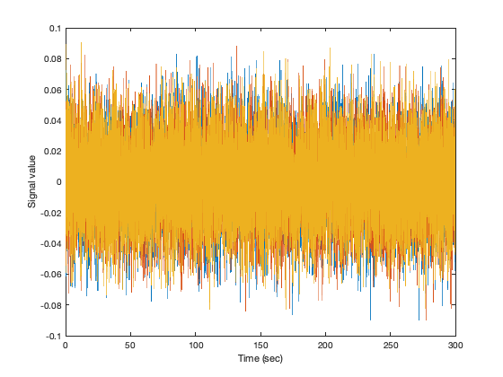

ROInets 1 - Introduction to orthogonalization
This example uses synthetic signals to illustrate the effect of orthogonalization.
Contents
TUTORIAL
Spatial leakage in the beamformer results in correlations between adjacent/nearby voxels being introduced, that are not the result of correlations in neural activity. As an approximation, this can be corrected for by removing all zero-lag correlations. Note that this does not eliminate correlations in the amplitude envelopes (although it does decrease them somewhat). By doing this, the remaining correlation is assumed to reflect genuine functional connectivity.
To demonstrate orthogonalization in practice, this example illustrates the use of the low-level ROInets function remove_source_leakage() which implements the core orthogonalization algorithms.
We generate a synthetic signal with 3 channels, and a manually specified covariance matrix C, using an auto-regressive model. This is done in two steps:
- first, we generate multi-variate normally distributed noise, using the Cholesky decomposition of the covariance matrix C; - second, we give some temporal structure to that noise by smoothing it in time using an auto-regressive model (see <https://uk.mathworks.com/help/signal/examples/linear-prediction-and-autoregressive-modeling.html this tutorial> for details).
Fs = 100; % Hz duration = 5*60; % 5 min time = 0:1/Fs:duration; nTime = length(time); nVoxel = 3; trueCov = [ 1.0 -0.1 0.6 ; -0.1 1.0 0.3 ; 0.6 0.3 1.0 ]; % generate random data b = fir1(1024, 0.5); [ARfilterTerms, ARnoiseVar] = lpc(b, 7); % AR model u = randn(nTime,nVoxel) * chol(trueCov * ARnoiseVar); % multi-variate normal data = filter(1, ARfilterTerms, u).'; % temporal smoothing, data is nVoxel-by-nTime figure('Name', 'Input data', 'Color', 'w'); plot(time.', data.'); xlabel('Time (sec)') ylabel('Signal value')
Our signal has 3 'voxels' and we will assign each to its own 'parcel'
spatialBasis = eye(3);
Notice that the signal has correlations between channels, which corresponds to the manually specified covariance matrix
corrcoef(data') corrcov(trueCov)
ans =
1.0000 -0.1034 0.5891
-0.1034 1.0000 0.3065
0.5891 0.3065 1.0000
ans =
1.0000 -0.1000 0.6000
-0.1000 1.0000 0.3000
0.6000 0.3000 1.0000
The remove_source_leakage() function takes in the data matrix, as well as the orthogonalization method. To apply symmetric orthogonalization, we can simply call:
tic
data_orthog = ROInets.remove_source_leakage(data, 'symmetric');
toc
Elapsed time is 0.026800 seconds.
Now, the channels have no static zero-lag correlation
corrcoef(data_orthog')
ans =
1.0000 0.0000 0.0000
0.0000 1.0000 -0.0000
0.0000 -0.0000 1.0000
However, the amplitude of the orthogonalized signals is quite different to the original signals
std(data.') std(data_orthog.')
ans =
0.0219 0.0222 0.0219
ans =
0.0058 0.0058 0.0058
The 'closest' orthogonalization method also results in orthogonal signals, but iteratively rotates and scales the basis vectors to best preserve the original signals. As a result, the orthogonalized signals are still uncorrelated, but their amplitudes much better match the original signals
data_orthog_closest = ROInets.remove_source_leakage(data, 'closest');
corrcoef(data_orthog_closest.')
std(data_orthog_closest.')
ans =
1.0000 0.0000 0.0000
0.0000 1.0000 -0.0000
0.0000 -0.0000 1.0000
ans =
0.0207 0.0219 0.0203
The 'closest' orthogonalization method also results in orthogonal signals, but iteratively rotates and scales the basis vectors to best preserve the original signals. As a result, the orthogonalized signals are still uncorrelated, but their amplitudes much better match the original signals
EXERCISES
1. Have a closer look at the outcome of the orthogonalisation procedures, using simple superimposed plotting or compute correlations between the different orthogonalization.
2. Also, try to model a situation where one parcel gets a lot of signal from another one (due to a bad parcellation, for example). This can be modeled by increasing the correlation between e.g. parcel 1 and 3 as defined by the matrix multiplied in variable C (i.e. change both values of 0.6 to 0.9, for example). Check the outcome of the orthogonalization. Have a look at how much the orthogonalization changes the original signal (by simply plotting over each other or by calculating the correlation coefficient). What happens with the similarity between the original and the 'closest' orthogonalisation if there is this elevated mixing of signals in comparison to the example in the practical?
3. Why would someone want to use 'symmetric' over 'closest' orthogonalization if it matches the original time-series so much better in terms of amplitude? Increase the dimensionality and/ or length of fthe time courses? and compare runtimes. Also, check how these two time-series compare (correlation or simple visual inspection).